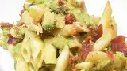

Mac and Guac Casserole

Description
Baked macaroni with a mixture of a guacamole cheese sauce and topped with bacon and bread crumbs.
Ingredients
- 16 ounces of elbow macaroni
- 2 ripe avocados
- 1 cup of cheddar
- 1 teaspoon cracked black pepper
- 1/2 cup of cooked bacon crumbs
- 1/2 cup of breadcrumbs
Instructions
- Preheat oven to 375 degrees F.
- Bring a large pot of lightly salted water to a boil; add macaroni and cook, stirring occasionally, until tender yet firm to the bite, about 11 minutes. Drain and transfer to an 8x15-inch baking dish.
- Mix avocados, cheddar cheese, and black pepper together in a bowl until smooth; stir into pasta. Top pasta with bacon and bread crumbs.
- Bake in the preheated oven until sauce is bubbling, 20 to 25 minutes.